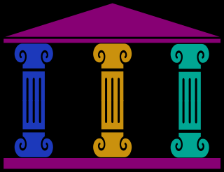
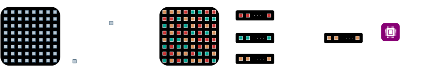
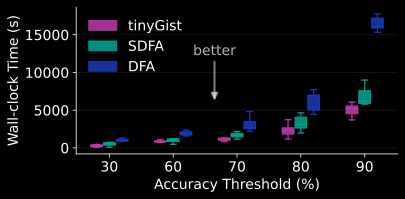
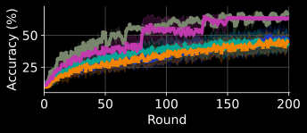
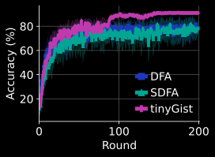
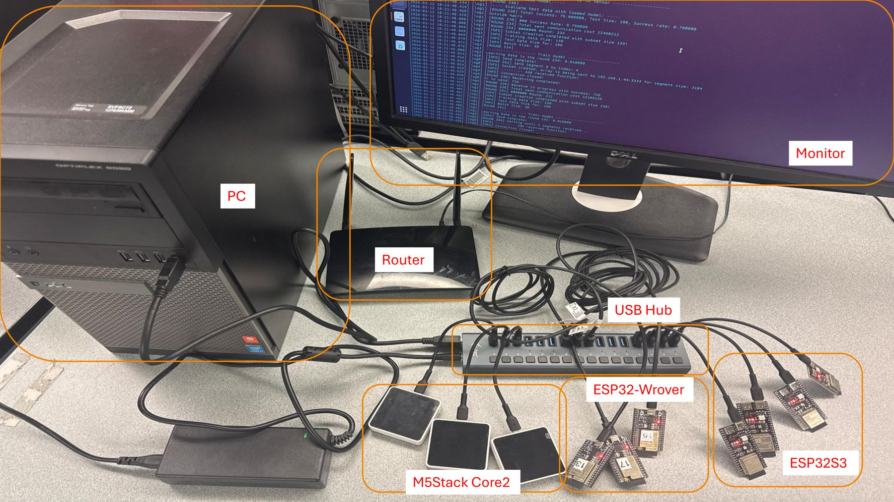

Importance-Based Segmentation
Parameters are binned into segments by magnitude. The proxy needs no extra backward pass and no buffers, yet tracks gradient-, Fisher- and Hessian-based importance at ≥50,000× lower cost.
ACM MobiCom 2026
1Technical University of Munich 2Fraunhofer IMS 3University of Duisburg-Essen
Each chip is a microcontroller; each flying square, a gist. Click anywhere to start a round.
In 90 Seconds
Subtitles are available from the player's CC menu.
The Idea
Tiny devices sit on data that is private and keeps changing, so it should stay where it is. Decentralized federated learning lets them train together with no server in the loop, yet trading the whole model with every neighbor, round after round, overwhelms a few hundred kilobytes of memory and a slow, lossy radio. tinyGist sends only the part that matters most.
We present tinyGist, an efficient decentralized federated learning framework designed for tiny microcontrollers. Instead of treating all model parameters equally, each device exchanges a portion of them, effectively sharing a "gist" of the information. Our major contributions are: (1) segment model parameters based on their importance, while identifying the most impactful updates, (2) share the gist probabilistically, maintaining model diversity while ensuring fast knowledge propagation across peers, (3) update models based on the information merit received from other neighbors, and (4) adaptive learning. We implement tinyGist across various simulation experiments, large-scale realistic emulation with hundreds of devices, and real deployment on homogeneous and heterogeneous physical microcontroller clusters. Evaluated on eight machine learning models and 15 tasks, tinyGist outperforms existing baselines in convergence speed by 1.35-3.3× and accuracy by up to 17%, while reducing communication overhead by ≈3× compared to the full-model baselines. We further validate our lightweight importance proxy against gradient-, Fisher-, and Hessian-based measures, and characterize how tinyGist interacts with differential privacy and secure aggregation.
Gist Lab
One tinyGist round on a toy model with 160 parameters: split the model by importance, send a few segments to random peers, and watch the peers aggregate once enough gists have arrived.
As in our firmware and simulator: each round a device splits its model into equally sized segments by parameter magnitude, then sends 6 of them, each picked with probability proportional to its mean magnitude and sent to a randomly chosen peer. A peer aggregates once 5 segments have arrived, weighting each by its sender's accuracy. In a real network, gists reach a peer from many devices. Payload: 32-bit values, a one-bit-per-parameter position bitmap, and the sender's accuracy.
How It Works

tinyGistParameters are binned into segments by magnitude. The proxy needs no extra backward pass and no buffers, yet tracks gradient-, Fisher- and Hessian-based importance at ≥50,000× lower cost.
A device picks which segment to send with probability proportional to its importance. Impactful updates spread fast; the rest still circulate, so models stay diverse.
Receivers weight incoming segments by the sender's accuracy, so reliable peers count more, and adaptive learning rates (AdaStair, AdaLoss) keep training stable.

Results
8 models, 15 tasks, from 5 to 200 devices, in simulation, emulation, and on real microcontroller clusters.



Built End to End
PyTorch framework for fast iteration on ideas, topologies, and datasets.
QEMU-based ESP32 devices in Docker, hundreds of them running the real compiled firmware.
20 boards over 2.4 GHz Wi-Fi: ESP32-S3 (240 MHz), M5Stack Core2 (160 MHz), and ESP32-WROVER (80 MHz), training on-device with AIfES.

Reproducible by Design
The artifact earned all three ACM badges. Simulation, ESP32/QEMU emulation, and physical-device workflows come in one container image.
docker pull ghcr.io/tinygist/tinygist-artifact-mobicom26:latest
docker run -it --name tinygist ghcr.io/tinygist/tinygist-artifact-mobicom26:latestCitation
@inproceedings{asadi2026tinygist,
author = {Asadi, Navidreza and Wulfert, Lars and Xia, Chi and Beng{\"u}, Halil Ibrahim and W{\"o}hrle, Hendrik and Kellerer, Wolfgang},
title = {Adaptive Segmented Decentralized Federated Learning on Tiny Devices},
booktitle = {Proceedings of the 32nd Annual International Conference on Mobile Computing and Networking},
series = {MobiCom '26},
year = {2026},
month = oct,
location = {Austin, TX, USA},
publisher = {Association for Computing Machinery},
address = {New York, NY, USA},
isbn = {9798400725050},
doi = {10.1145/3795866.3844490}
}Navidreza Asadi, Lars Wulfert, Chi Xia, Halil Ibrahim Bengü, Hendrik Wöhrle, and Wolfgang Kellerer. 2026. Adaptive Segmented Decentralized Federated Learning on Tiny Devices. In The 32nd Annual International Conference on Mobile Computing and Networking (MobiCom '26), October 26–30, 2026, Austin, TX, USA. ACM, New York, NY, USA. https://doi.org/10.1145/3795866.3844490